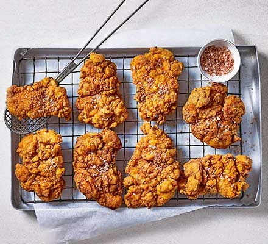

Next level fried Chicken
Choose nomeless thighs to make the ultimate fried chicken. For the coating. Use this best method that results in the crispiest finish ever
ingredients
Steps
- Step 1:to make the spice mix, combine all the ingredients, whisk the milk with the vinegar, egg 1/2 tsp salt and 1 tbsp spice mix in a bowl or deep plastic container to make the buttermilk marinade. Open the chicken thighs and put between two pieces of baking parchment, then flatten using a rolling pin. Transfer to the marinade, then cover and chill for 4 hours, or overnite
- Step 2:Make the coating by combining the flours and turmeric with the most of the remaining spice mix and a genorous pinch of salt. Drain the chicken thighs =, reserving the marinade. One by one, dredge each thigh in the flour, then dip the reseerved marinade, then dredge again in the flour, pressing on as musch as you can to coat. Transfer the coasted thighs to a large plate.
- Step 3:Heat a 10 cm depth of oil in a shallow saucepan or deep-fat fryer until it reaches 175C. Lower two or three of the thighs in at a time and fry undistributed for 3 mins, making sure the temperature doesn't drop below 160C. Flip the thighs, then fry for another 2-3 mins untill deeply golden and crisp on both sides.Lift the chicken out and transfer to a tray lined with kitchen paper to drain, then out on a rack and keep warm in a low oven while you fry the remianing thighs
- step 4:When all the chicken has been fried combine the reserved spice mix with 1 tbsp flaky sea salt and sprinkle over the chicken to serve